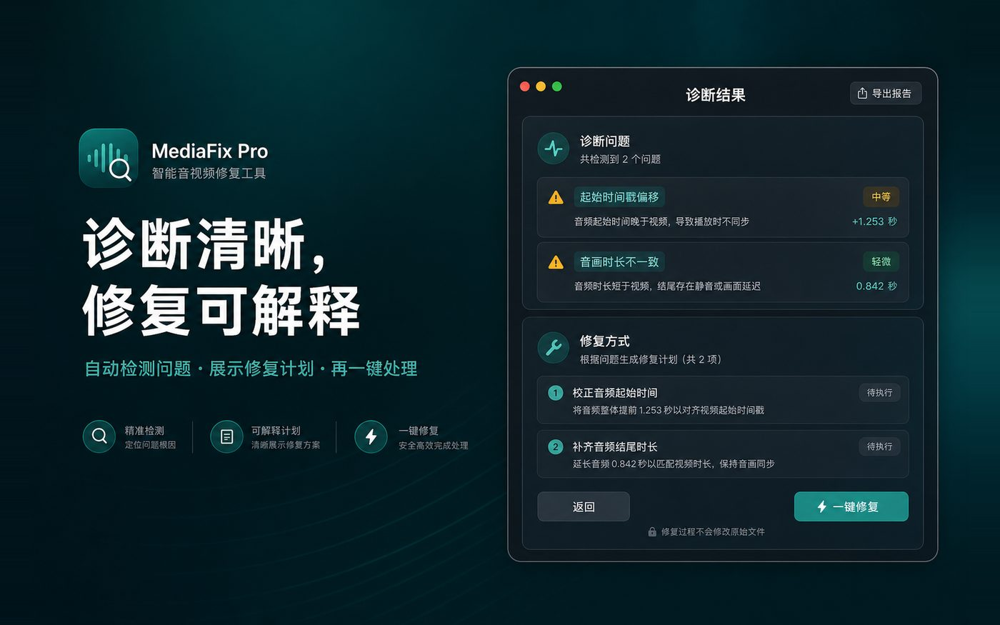

无法播放
文件打不开、封装异常或格式不被识别时，先诊断再修复导出。
针对多种视频损坏问题提供专业修复方案，尽力恢复可读的 MP4 结果。
文件打不开、封装异常或格式不被识别时，先诊断再修复导出。
录制中断、文件不完整、缺索引时，提供启发式恢复路径。
画面马赛克、色块或损坏帧，尽量跳过坏包并重建可读流。
播放卡顿、音画不同步、时间戳异常，按诊断计划校正。
缺失音轨或画面轨时，尽量保留可恢复的一侧并导出兼容封装。
支持批量导入与队列处理，适合会议录屏、课程素材等批量场景。
流程简单：拖入 → 诊断 → 确认计划 → 导出，全程在本机完成。
拖入一个或多个文件，或通过工具栏「添加视频」。
可选填写遇到的现象，或交给自动检测。
阅读问题清单与修复计划，再决定是否一键修复。
修复结果写入输出目录；源文件保持只读不改写。

不是黑盒一键：你会看到检测到的问题、严重程度提示，以及即将执行的修复步骤。
低频刚需场景友好：先免费试用，需要无限修复时一次买断 Pro。
适合偶尔救急
一次买断，本机永久有效
查看常见问题、权限与输出目录说明，或通过 GitHub Issues / 邮件联系我们。